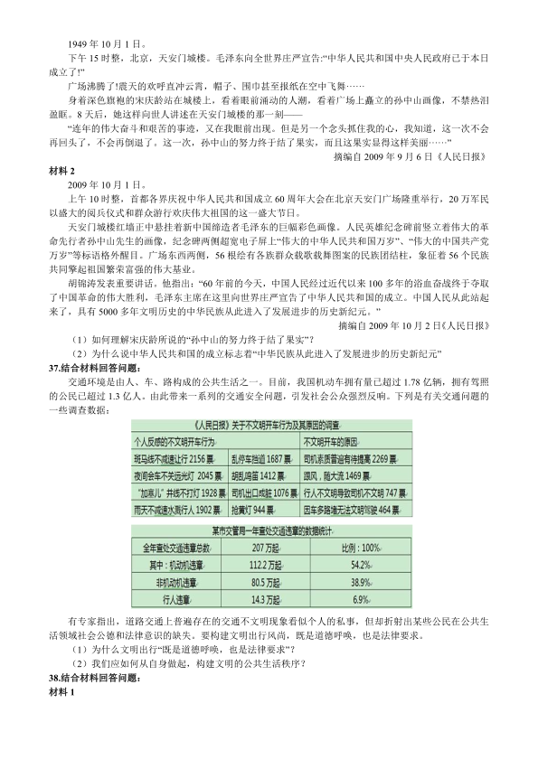

第 1 / 7 页

2010 年全国硕士研究生入学统一考试思想政治理论试题
一、单项选择题：1～16 小题，每小题1 分，共16 分。下列每题给出的四个选项中，只有一个选项是符合
题目要求的。请在答题卡上将所选项的字母涂黑。
1.1884 年1 月3 日，意大利人卡内帕给恩格斯写信，请求他为即将在日内瓦出版的《新纪元》周刊的创刊
号题词，而且要求尽量用简短的字句来表述未来的社会主义纪元的基本思想，以区别于伟大诗人但丁的对
旧纪元所作的“一些人统治，另一些人受苦难”的界定。恩格斯回答说，除了从《共产党宣言》中摘出下面一
段话外，再也找不出合适的了，这就是：“代替那存在着阶级和阶级对立的资产阶级旧社会的，将是这样一
个联合体，在那里，每个人的自由发展是一切人的自由发展的条件。”这段话表明，马克思主义追求的根本
价值目标是：
A．实现人的自由而全面的发展
B．实现人类永恒不变的普适价值
C．建立一个四海之内皆兄弟的大同世界
D．建立一个自由、平等、博爱的理性王国
2.有一则箴言：“在溪水和岩石的斗争中，胜利的总是溪水，不是因为力量，而是因为坚持。”“坚持就是胜
利”的哲理在于：
A．必然性通过偶然性开辟道路
B．肯定中包含着否定的因素
C．量变必然引起质变
D．有其因必有其果
3.右边这张照片反映出由于气候变暖，北极冰盖融化，致使北极熊无处可去的场景，颇具震撼力。它给我们
地球上的人类发出的警示是：
A．人与自然的关系成为人与人之间一切社会关系的核心
B．生态失衡已成为自然界自身周期演化不可逆转的趋势
C．自然地理环境已成为人类社会发展的根本决定力量
D．生态环境已日益成为人类反思自身活动的重要前
4.劳动力成为商品是货币转化为资本的前提条件，这是因为：
A．资本家购买的是劳动力的价值
B．劳动力商品具有价值和使用价值
C．货币所有者购买的劳动力能够带来剩余价值
D．劳动力自身的价值能够在消费过程中转移到新的商品中去
5.1981 年党的十一届六中全会通过《关于建国以来党的若干历史问题的建议》对我国社会主要矛盾作了规
范的表述：“社会主义改造完成以后，我国所要解决的主要矛盾，是人民日益增长的物质文化需要同落后的
社会生产之间的矛盾。”我国社会主要矛盾的主要方面将长期是：
A．生产力落后
B．生产力不断发展的要求
C．经济文化发展不平衡
D．人民日益增长的物质文化需要
6.“发展才是硬道理”、“发展是党执政兴国的第一要务”、“发展是解决中国一切问题的总钥匙”，这是对社会
主义建设历史经验的深刻总结。中国解决所有问题的关键是要靠自己的发展，而发展的根本目的是：
A．增强综合国力
B．体现社会主义优越性
C．消灭剥削，消除两极分化
D．使人民共享发展成果，实现共同富裕
7.党的十七大报告指出，坚持节约资源和保护环境的基本国策，关系人民群众切身利益和中华民族的生存发
展，必须把建设资源节约型、环境友好型社会放在工业化，现代化发展战略的突出位置。建设资源节约型
社会的核心是：
A．节约使用资源和提高能源资源利用效率
B．加强节能减排和生态保护工作
C．限制能源资源的开发和利用
D．发展循环经济
查看 / 复制本页文字
2010 年全国硕士研究生入学统一考试思想政治理论试题 一、单项选择题：1～16 小题，每小题1 分，共16 分。下列每题给出的四个选项中，只有一个选项是符合 题目要求的。请在答题卡上将所选项的字母涂黑。 1.1884 年1 月3 日，意大利人卡内帕给恩格斯写信，请求他为即将在日内瓦出版的《新纪元》周刊的创刊 号题词，而且要求尽量用简短的字句来表述未来的社会主义纪元的基本思想，以区别于伟大诗人但丁的对 旧纪元所作的“一些人统治，另一些人受苦难”的界定。恩格斯回答说，除了从《共产党宣言》中摘出下面一 段话外，再也找不出合适的了，这就是：“代替那存在着阶级和阶级对立的资产阶级旧社会的，将是这样一 个联合体，在那里，每个人的自由发展是一切人的自由发展的条件。”这段话表明，马克思主义追求的根本 价值目标是： A．实现人的自由而全面的发展 B．实现人类永恒不变的普适价值 C．建立一个四海之内皆兄弟的大同世界 D．建立一个自由、平等、博爱的理性王国 2.有一则箴言：“在溪水和岩石的斗争中，胜利的总是溪水，不是因为力量，而是因为坚持。”“坚持就是胜 利”的哲理在于： A．必然性通过偶然性开辟道路 B．肯定中包含着否定的因素 C．量变必然引起质变 D．有其因必有其果 3.右边这张照片反映出由于气候变暖，北极冰盖融化，致使北极熊无处可去的场景，颇具震撼力。它给我们 地球上的人类发出的警示是： A．人与自然的关系成为人与人之间一切社会关系的核心 B．生态失衡已成为自然界自身周期演化不可逆转的趋势 C．自然地理环境已成为人类社会发展的根本决定力量 D．生态环境已日益成为人类反思自身活动的重要前 4.劳动力成为商品是货币转化为资本的前提条件，这是因为： A．资本家购买的是劳动力的价值 B．劳动力商品具有价值和使用价值 C．货币所有者购买的劳动力能够带来剩余价值 D．劳动力自身的价值能够在消费过程中转移到新的商品中去 5.1981 年党的十一届六中全会通过《关于建国以来党的若干历史问题的建议》对我国社会主要矛盾作了规 范的表述：“社会主义改造完成以后，我国所要解决的主要矛盾，是人民日益增长的物质文化需要同落后的 社会生产之间的矛盾。”我国社会主要矛盾的主要方面将长期是： A．生产力落后 B．生产力不断发展的要求 C．经济文化发展不平衡 D．人民日益增长的物质文化需要 6.“发展才是硬道理”、“发展是党执政兴国的第一要务”、“发展是解决中国一切问题的总钥匙”，这是对社会 主义建设历史经验的深刻总结。中国解决所有问题的关键是要靠自己的发展，而发展的根本目的是： A．增强综合国力 B．体现社会主义优越性 C．消灭剥削，消除两极分化 D．使人民共享发展成果，实现共同富裕 7.党的十七大报告指出，坚持节约资源和保护环境的基本国策，关系人民群众切身利益和中华民族的生存发 展，必须把建设资源节约型、环境友好型社会放在工业化，现代化发展战略的突出位置。建设资源节约型 社会的核心是： A．节约使用资源和提高能源资源利用效率 B．加强节能减排和生态保护工作 C．限制能源资源的开发和利用 D．发展循环经济
第 2 / 7 页
8.随着经济的快速发展和物质生活水平的提高。人们的精神文化需求日益增长，迫切要求通过深化文化体制
改革，激发文化发展的活力，为人民群众提供更多更好的文化产品和文化服务，保障人民的基本文化权益。
保障人民基本文化权益的主要途径是：
A．繁荣社会主义文化，提高文化软实力
B．协调发展公益性文化事业，经营性文化产业
C．发展公益性事业，建立政府主导的公共文化体系
D．调动社会力量在市场竞争中发展壮大文化产业
9.“十月革命一声炮响，给我们送来了马克思列宁主义”，五四运动后，马克思列宁主义得到广泛传播。在中
国最早讴歌十月革命、比较系统的介绍马克思主义的是：
A．陈独秀
B．李大钊
C．毛泽东
D．瞿秋白
10.1956 年4 月和5 月，毛泽东先后在中共中央政治局扩大会议和最高国务会议上作《论十大关系》报告，
他指出“最近苏联方面暴露了他们在建设社会主义过程中的一些缺点和错误，他们走过的弯路你还想走？过
去，我们就是鉴于他们的经验教训，少走了一些弯路，现在当然更要引以为戒”，这表明，以毛泽东为主要
代表的中国共产党人：
A．实现了马克思主义同中国实际的“第二次结合”
B．开始探索中国自己的社会主义建设道路
C．开始找到自己的一条适合中国的路线
D．已经突破社会主义苏联模式的束缚
11.爱因斯坦曾经说过“大多数人都以为是才智成就了科学家，他们错了，是品格”下列名言与这段话含义一
致的是：
A．道虽迩，不行不至；事虽小，不为不成
B．才者，德之资也；德者，才之帅也
C．不学礼，无以立
D．是非之心，智也
12.中华民族精神源远流长，包含着丰富的内容。其中，夸父追日、大禹治水、愚公移山、精卫填海等动人
的传说所体现出的中华民族精神是：
A．勤劳勇敢
B．团结统一
C．自强不息
D．爱好和平
13.2001 年中共中央印发的《公民道德建设实施纲要》中规定了公民基本道德规范的主要内容。公民道德建
设的重点是：
A．爱国守法
B．诚实守信
C．勤奋自强
D．团结友善
14.我国宪法明确规定实行依法治国，建设社会主义法治国家。依法治国的根本要求是：
A．有法可依、有法必依、执法必严、违法必究
B．保障公民的知情权、参与权、表达权、监督权
C．立法公开、执法公平、司法公正
D．社会生活的法制化、规范化、民主化
15.2009 年3 月28 日，西藏自治区各族各界干部群众万余人身着节日盛装，在拉萨布达拉宫广场隆重集会。
热烈庆祝：
A．西藏自治区和平解放58 周年
B．西藏自治区成立44 周年
C．西藏自治区九届人大二次会议召开
D．首个西藏“百万农奴解放纪念日”
16.胡锦涛主席在2009 年9 月二十国领导人比斯堡峰会上发表了题为“全力促进增长推动平衡发展”的讲话
中指出：当前国际社会十分关注全球经济失衡问题。失衡的表现为部分国家储蓄消费失衡、贸易收支失衡
更表现为世界财富分配失衡，资源拥有和消费失衡，国际货币体系失衡。导致失衡的原因是复杂的，多方
面的。从根本上看，失衡的根源是：
A．经济全球化深入发展、国际产业分工转移、国际资源流动
B．现行国际经济体系、主要经济体宏观经济政策
C．各国消费文化和生活方式
D．南北发展严重不平衡
查看 / 复制本页文字
8.随着经济的快速发展和物质生活水平的提高。人们的精神文化需求日益增长，迫切要求通过深化文化体制 改革，激发文化发展的活力，为人民群众提供更多更好的文化产品和文化服务，保障人民的基本文化权益。 保障人民基本文化权益的主要途径是： A．繁荣社会主义文化，提高文化软实力 B．协调发展公益性文化事业，经营性文化产业 C．发展公益性事业，建立政府主导的公共文化体系 D．调动社会力量在市场竞争中发展壮大文化产业 9.“十月革命一声炮响，给我们送来了马克思列宁主义”，五四运动后，马克思列宁主义得到广泛传播。在中 国最早讴歌十月革命、比较系统的介绍马克思主义的是： A．陈独秀 B．李大钊 C．毛泽东 D．瞿秋白 10.1956 年4 月和5 月，毛泽东先后在中共中央政治局扩大会议和最高国务会议上作《论十大关系》报告， 他指出“最近苏联方面暴露了他们在建设社会主义过程中的一些缺点和错误，他们走过的弯路你还想走？过 去，我们就是鉴于他们的经验教训，少走了一些弯路，现在当然更要引以为戒”，这表明，以毛泽东为主要 代表的中国共产党人： A．实现了马克思主义同中国实际的“第二次结合” B．开始探索中国自己的社会主义建设道路 C．开始找到自己的一条适合中国的路线 D．已经突破社会主义苏联模式的束缚 11.爱因斯坦曾经说过“大多数人都以为是才智成就了科学家，他们错了，是品格”下列名言与这段话含义一 致的是： A．道虽迩，不行不至；事虽小，不为不成 B．才者，德之资也；德者，才之帅也 C．不学礼，无以立 D．是非之心，智也 12.中华民族精神源远流长，包含着丰富的内容。其中，夸父追日、大禹治水、愚公移山、精卫填海等动人 的传说所体现出的中华民族精神是： A．勤劳勇敢 B．团结统一 C．自强不息 D．爱好和平 13.2001 年中共中央印发的《公民道德建设实施纲要》中规定了公民基本道德规范的主要内容。公民道德建 设的重点是： A．爱国守法 B．诚实守信 C．勤奋自强 D．团结友善 14.我国宪法明确规定实行依法治国，建设社会主义法治国家。依法治国的根本要求是： A．有法可依、有法必依、执法必严、违法必究 B．保障公民的知情权、参与权、表达权、监督权 C．立法公开、执法公平、司法公正 D．社会生活的法制化、规范化、民主化 15.2009 年3 月28 日，西藏自治区各族各界干部群众万余人身着节日盛装，在拉萨布达拉宫广场隆重集会。 热烈庆祝： A．西藏自治区和平解放58 周年 B．西藏自治区成立44 周年 C．西藏自治区九届人大二次会议召开 D．首个西藏“百万农奴解放纪念日” 16.胡锦涛主席在2009 年9 月二十国领导人比斯堡峰会上发表了题为“全力促进增长推动平衡发展”的讲话 中指出：当前国际社会十分关注全球经济失衡问题。失衡的表现为部分国家储蓄消费失衡、贸易收支失衡 更表现为世界财富分配失衡，资源拥有和消费失衡，国际货币体系失衡。导致失衡的原因是复杂的，多方 面的。从根本上看，失衡的根源是： A．经济全球化深入发展、国际产业分工转移、国际资源流动 B．现行国际经济体系、主要经济体宏观经济政策 C．各国消费文化和生活方式 D．南北发展严重不平衡
第 3 / 7 页
二、多项选择题：17～33 题，每小题2 分，共34 分。下列每题给出的四个选项中，至少有两个选项是符
合题目要求的。请在答题卡上将所选项的字母涂黑。多选或少选均不得分。
17．从上世纪70 年代至今,商务印书馆先后出版了多个版本的《新华字典》，除了一些旧的词条，增加了一
些新的词条，并对若干词条的词义给了修改。例如1971 年版对“科举”这个词条的解释是：“从隋唐到清代的
封建王朝为了维护其反动统治而设的分科考选文武官吏后备人员的制度”,1992 年版删去“反动”二字，1998
版又删去“为了维护其统治而设”。再如1971 年版在解释了“雉”就是“野鸡”之后，紧跟着说“肉可以吃，羽毛
可以做装饰品”。1992、1998 年版也一样，直到2008 年版删去了这句话。一本小字典，记载着词语的发展
变化，也记录着时代前进的印记。字典词条释义的变化表明人们的意识：
A．是客观世界的能动反映
B．取决于词语含义的改变
C．随着社会生活变化而变化
D．需要借助语言这一物质外壳表达出来
18.历史经验表明，经济危机往往孕育着新的科技革命。1857 年的世界经济危机引发了电气革命，推动人类
社会从蒸汽时代进入电气时代。1929 年的世界经济危机引发了电子革命，推动人类社会从电气时代进入电
子时代。由此证明：
A．科技革命是摆脱社会危机的根本出路
B．科学技术是社会形态更替的根本标志
C．社会实践的需要是科技发展的强大动力
D．科技创新能够推动社会经济跨越式发展
19．有一则寓言讲到：狐狸把鱼汤盛在平底的盘子里，请仙鹤来与它一起“平等”地喝鱼汤，结果仙鹤一点也
没喝到，全被狐狸喝去了。这个寓言给人们的启示是，尽管资产阶级宣布“法律面前人人平等”，但是：
A．法律名义上的平等掩盖着事实上的不平等
B．这种形式上的平等即是资本主义制度的本质
C．它的实质是将劳资之间经济利益的不平等合法化
D．这种平等的权利是建立在财产不平等基础之上的权利
20．1989 年，时任美国国务院顾问的弗朗西斯·福山抛出了所谓的“历史终结论”，认为西方实行的自由民主
制度是“人类社会形态进步的终点”和“人类最后一种统治形式”。然而，20 年来的历史告诉我们，终结的不
是历史，而是西方的优越感。就在柏林墙倒塌20 年后的2009 年11 月9 日，BBC 公布了一份对27 国民众
的调查，结果半数以上的受访者不满资本主义制度。此次调查的主办方之一的“全球扫描”公司主席米勒对媒
体表示，这说明随着1989 年柏林墙的倒塌，资本主义并没有取得看上去的压倒性胜利，这一点在这次金融
危机中表现得尤其明显。“历史终结论”的破产说明：
A．社会规律和自然规律一样都是作为一种盲目的无意识力量起作用
B．人类历史发展的曲折性不会改变历史发展的前进性
C．一些国家社会发展的特殊形式不能否定历史发展的普遍规律
D．人们对社会发展某个阶段的认识不能代替对社会发展整个过程的认识
22.1952 年，党中央在酝酿过渡时期总路线时，毛泽东把实现向社会主义转变的设想，由建国之初的“先搞
工业化建设，再一举过渡”改变为“建设和改造同时并举，逐步过渡”。这一改变的原因和条件是：
A．我国社会主义经济因素的不断增长和对资本主义经济的限制
B．为了确定我国工业化建设的社会主义方向
C．我国工业化建设取得了重大成就
D．民主革命的遗留任务已经完成
23.1954 年9 月，第一届全国人民代表大会第一次会议在北京召开，标志着人民代表大会制度在全国范围内
建立起来。人民代表大会制度是中国人民当家作主的根本政治制度，这一制度是：
A．中国共产党把马克思主义与中国实际相结合的伟大创造
B．中国共产党带领全国人民长期奋斗的重要成果
C．全国各族人民的共同利益和共同愿望的反映
D．近代以来中国社会发展的必然选择
24.我国是一个多民族的国家，在社会主义时期处理民族问题的基本原则是：
A．实行民族区域自治
B．维护祖国统一
查看 / 复制本页文字
二、多项选择题：17～33 题，每小题2 分，共34 分。下列每题给出的四个选项中，至少有两个选项是符 合题目要求的。请在答题卡上将所选项的字母涂黑。多选或少选均不得分。 17．从上世纪70 年代至今,商务印书馆先后出版了多个版本的《新华字典》，除了一些旧的词条，增加了一 些新的词条，并对若干词条的词义给了修改。例如1971 年版对“科举”这个词条的解释是：“从隋唐到清代的 封建王朝为了维护其反动统治而设的分科考选文武官吏后备人员的制度”,1992 年版删去“反动”二字，1998 版又删去“为了维护其统治而设”。再如1971 年版在解释了“雉”就是“野鸡”之后，紧跟着说“肉可以吃，羽毛 可以做装饰品”。1992、1998 年版也一样，直到2008 年版删去了这句话。一本小字典，记载着词语的发展 变化，也记录着时代前进的印记。字典词条释义的变化表明人们的意识： A．是客观世界的能动反映 B．取决于词语含义的改变 C．随着社会生活变化而变化 D．需要借助语言这一物质外壳表达出来 18.历史经验表明，经济危机往往孕育着新的科技革命。1857 年的世界经济危机引发了电气革命，推动人类 社会从蒸汽时代进入电气时代。1929 年的世界经济危机引发了电子革命，推动人类社会从电气时代进入电 子时代。由此证明： A．科技革命是摆脱社会危机的根本出路 B．科学技术是社会形态更替的根本标志 C．社会实践的需要是科技发展的强大动力 D．科技创新能够推动社会经济跨越式发展 19．有一则寓言讲到：狐狸把鱼汤盛在平底的盘子里，请仙鹤来与它一起“平等”地喝鱼汤，结果仙鹤一点也 没喝到，全被狐狸喝去了。这个寓言给人们的启示是，尽管资产阶级宣布“法律面前人人平等”，但是： A．法律名义上的平等掩盖着事实上的不平等 B．这种形式上的平等即是资本主义制度的本质 C．它的实质是将劳资之间经济利益的不平等合法化 D．这种平等的权利是建立在财产不平等基础之上的权利 20．1989 年，时任美国国务院顾问的弗朗西斯·福山抛出了所谓的“历史终结论”，认为西方实行的自由民主 制度是“人类社会形态进步的终点”和“人类最后一种统治形式”。然而，20 年来的历史告诉我们，终结的不 是历史，而是西方的优越感。就在柏林墙倒塌20 年后的2009 年11 月9 日，BBC 公布了一份对27 国民众 的调查，结果半数以上的受访者不满资本主义制度。此次调查的主办方之一的“全球扫描”公司主席米勒对媒 体表示，这说明随着1989 年柏林墙的倒塌，资本主义并没有取得看上去的压倒性胜利，这一点在这次金融 危机中表现得尤其明显。“历史终结论”的破产说明： A．社会规律和自然规律一样都是作为一种盲目的无意识力量起作用 B．人类历史发展的曲折性不会改变历史发展的前进性 C．一些国家社会发展的特殊形式不能否定历史发展的普遍规律 D．人们对社会发展某个阶段的认识不能代替对社会发展整个过程的认识 22.1952 年，党中央在酝酿过渡时期总路线时，毛泽东把实现向社会主义转变的设想，由建国之初的“先搞 工业化建设，再一举过渡”改变为“建设和改造同时并举，逐步过渡”。这一改变的原因和条件是： A．我国社会主义经济因素的不断增长和对资本主义经济的限制 B．为了确定我国工业化建设的社会主义方向 C．我国工业化建设取得了重大成就 D．民主革命的遗留任务已经完成 23.1954 年9 月，第一届全国人民代表大会第一次会议在北京召开，标志着人民代表大会制度在全国范围内 建立起来。人民代表大会制度是中国人民当家作主的根本政治制度，这一制度是： A．中国共产党把马克思主义与中国实际相结合的伟大创造 B．中国共产党带领全国人民长期奋斗的重要成果 C．全国各族人民的共同利益和共同愿望的反映 D．近代以来中国社会发展的必然选择 24.我国是一个多民族的国家，在社会主义时期处理民族问题的基本原则是： A．实行民族区域自治 B．维护祖国统一
第 4 / 7 页
C．反对民族分裂
D．坚持民族平等、民族团结、各民族共同繁荣
25.改革开放以来，中国成功地走上了一条与本国国情和时代特征相适应的和平发展道路。坚持走和平发展
道路，符合中国的历史文化传统，这是因为：
A．中华民族是热爱和平的民族
B．和平与发展成为时代发展的潮流
C．中国人民在对外交往中始终强调亲仁善邻、和而不同
D．中华文化是一种和平的文化，渴望和平始终是中国人民的精神特征
26.19 世纪下半叶，以“自强”、“求富”为目标的洋务运动历时30 多年。其最终失败的主要原因是：
A．指导思想的封建性
B．对外国具有依赖性
C．资金人才的匮乏性
D．洋务企业管理的腐朽性
27.邓小平指出：“马克思、列宁从来没有说过农村包围城市，这个原理在当时世界上还是没有的。但是毛泽
东同志根据中国的具体条件指明了革命的具体道路”。毛泽东找到农村包围城市、武装夺取政权这条道路的
根据是：
A．中国内无民主制度，外无民族独立
B．农民占人口绝大多数，是民主革命的主力军
C．中国革命的敌人长期占据着中心城市，农村是其统治的薄弱环节
D．中国经济政治发展的不平衡
28.1941 年1 月，震惊中外的皖南事变爆发后，《新华日报》刊出周恩来的题词手迹：“为江南死国难者志
哀！”“千古奇冤，江南一叶；同室操戈，相煎何急？！”大敌当前，中国共产党以民族利益为重，坚持正确
的方针和原则，避免了抗日民族统一战线的破裂。这些方针和原则包括：
A．又联合又斗争
B．有理、有利、有节
C．针锋相对，寸土必争
D．发展进步势力，争取中间势力，孤立顽固势力
29.解放战争时期，在国民党统治区形成了以学生运动为先导的人民民主运动。成为配合人民解放战争的第
二条战线。第二条战线形成的原因是：
A．国民党政府专制独裁、官员贪污腐败
B．国民党在军事上的失利
C．国民党顽固坚持内战政策
D．国统区爆发严重经济危机
30.1955 年，钱学森冲破重重阻力，回到魂牵梦绕的祖国。当有人问他为什么回国时，他说：“我为什么要
走回归祖国这条道路？我认为道理很简单——鸦片战争近百年来，国人强国梦不息，抗争不断。革命先烈
为兴邦，为了炎黄子孙的强国梦，献出了宝贵的生命，血沃中华热土。我个人作为炎黄子孙的一员，只能
追随先烈的足迹，在千万般艰险中，探索追求，不顾及其他。再看看共和国的缔造者和建设者们，在百废
待兴的贫瘠土地上，顶住国内的贫穷，国外的封锁，经过多少个风风雨雨的春秋，让一个社会主义新中国
屹立于世界东方。想到这些，还有什么个人利益不能丢弃呢？”钱学森发自肺腑的言语，对我们在新时期弘
扬爱国主义精神的启示是：
A．科学没有国界，但科学家有祖国
B．个人的理想要与国家命运、民族命运相结合
C．爱国主义与爱社会主义具有深刻的内在一致性
D．爱国主义是爱国情感、爱国思想和爱国行为的高度统一
31.政治权利和自由是指公民作为国家政治生活主体依法享有的参加国家政治生活的权利和自由，是国家为
公民直接参与政治活动提供的基本保障。这一基本权利具体包括：
A．人身自由权
B．选举权和被选举权C．宗教信仰自由
D．政治自由
32.2009 年9 月18 日，中国共产党第十七届中央委员会第四次全体会议胜利闭幕，全会审议通过了《中共
中央关于加强和改进新形势下党的建设若干重大问题的决定》，对当前和今后一个时期加强和改进党的建设
作出了部署，其中除了强调要建设马克思主义学习型政党、坚持和健全民主集中制外，还要：
A．弘扬党的优良作风
B．深化干部人事制度改革
C．做好抓基层打基础工作
D．加快推进惩治和预防腐败体系建设
33.第八次中国—东盟经贸部长会议于2009 年8 月15 日在泰国首都曼谷召开，双方共同签署了中国—东盟
自贸区《投资协议》，标志着中国与东盟历时7 年之久的自贸区主要谈判任务已经完成，该协议的重要意义
查看 / 复制本页文字
C．反对民族分裂 D．坚持民族平等、民族团结、各民族共同繁荣 25.改革开放以来，中国成功地走上了一条与本国国情和时代特征相适应的和平发展道路。坚持走和平发展 道路，符合中国的历史文化传统，这是因为： A．中华民族是热爱和平的民族 B．和平与发展成为时代发展的潮流 C．中国人民在对外交往中始终强调亲仁善邻、和而不同 D．中华文化是一种和平的文化，渴望和平始终是中国人民的精神特征 26.19 世纪下半叶，以“自强”、“求富”为目标的洋务运动历时30 多年。其最终失败的主要原因是： A．指导思想的封建性 B．对外国具有依赖性 C．资金人才的匮乏性 D．洋务企业管理的腐朽性 27.邓小平指出：“马克思、列宁从来没有说过农村包围城市，这个原理在当时世界上还是没有的。但是毛泽 东同志根据中国的具体条件指明了革命的具体道路”。毛泽东找到农村包围城市、武装夺取政权这条道路的 根据是： A．中国内无民主制度，外无民族独立 B．农民占人口绝大多数，是民主革命的主力军 C．中国革命的敌人长期占据着中心城市，农村是其统治的薄弱环节 D．中国经济政治发展的不平衡 28.1941 年1 月，震惊中外的皖南事变爆发后，《新华日报》刊出周恩来的题词手迹：“为江南死国难者志 哀！”“千古奇冤，江南一叶；同室操戈，相煎何急？！”大敌当前，中国共产党以民族利益为重，坚持正确 的方针和原则，避免了抗日民族统一战线的破裂。这些方针和原则包括： A．又联合又斗争 B．有理、有利、有节 C．针锋相对，寸土必争 D．发展进步势力，争取中间势力，孤立顽固势力 29.解放战争时期，在国民党统治区形成了以学生运动为先导的人民民主运动。成为配合人民解放战争的第 二条战线。第二条战线形成的原因是： A．国民党政府专制独裁、官员贪污腐败 B．国民党在军事上的失利 C．国民党顽固坚持内战政策 D．国统区爆发严重经济危机 30.1955 年，钱学森冲破重重阻力，回到魂牵梦绕的祖国。当有人问他为什么回国时，他说：“我为什么要 走回归祖国这条道路？我认为道理很简单——鸦片战争近百年来，国人强国梦不息，抗争不断。革命先烈 为兴邦，为了炎黄子孙的强国梦，献出了宝贵的生命，血沃中华热土。我个人作为炎黄子孙的一员，只能 追随先烈的足迹，在千万般艰险中，探索追求，不顾及其他。再看看共和国的缔造者和建设者们，在百废 待兴的贫瘠土地上，顶住国内的贫穷，国外的封锁，经过多少个风风雨雨的春秋，让一个社会主义新中国 屹立于世界东方。想到这些，还有什么个人利益不能丢弃呢？”钱学森发自肺腑的言语，对我们在新时期弘 扬爱国主义精神的启示是： A．科学没有国界，但科学家有祖国 B．个人的理想要与国家命运、民族命运相结合 C．爱国主义与爱社会主义具有深刻的内在一致性 D．爱国主义是爱国情感、爱国思想和爱国行为的高度统一 31.政治权利和自由是指公民作为国家政治生活主体依法享有的参加国家政治生活的权利和自由，是国家为 公民直接参与政治活动提供的基本保障。这一基本权利具体包括： A．人身自由权 B．选举权和被选举权C．宗教信仰自由 D．政治自由 32.2009 年9 月18 日，中国共产党第十七届中央委员会第四次全体会议胜利闭幕，全会审议通过了《中共 中央关于加强和改进新形势下党的建设若干重大问题的决定》，对当前和今后一个时期加强和改进党的建设 作出了部署，其中除了强调要建设马克思主义学习型政党、坚持和健全民主集中制外，还要： A．弘扬党的优良作风 B．深化干部人事制度改革 C．做好抓基层打基础工作 D．加快推进惩治和预防腐败体系建设 33.第八次中国—东盟经贸部长会议于2009 年8 月15 日在泰国首都曼谷召开，双方共同签署了中国—东盟 自贸区《投资协议》，标志着中国与东盟历时7 年之久的自贸区主要谈判任务已经完成，该协议的重要意义
第 5 / 7 页
在于：
A．确保中国对外建立的第一个自贸区于2010 年全面建成
B．将中国—东盟战略伙伴关系提升到更高水平
C．为地区和全球经济复苏与发展作出积极贡献
D．为东亚自由贸易区的建立提供法律保障
三、分析题：34～38 小题，每小题10 分，共50 分。要求结合所学知识分析材料回答问题。
34.结合材料回答问题：
早年，梅兰芳与人合演《断桥》，也就是《白蛇传》，剧情是白娘子和许仙两个人悲欢离合的爱情故事，
梅兰芳在剧中饰演白娘子。剧中，白娘子有一个动作就是面对负心的丈夫许仙追赶、跪在地上哀求她的时
候，她爱恨交加、五味杂陈，就用一根手指头去戳许仙的脑门儿。不想，梅兰芳用力过大，跪在那里扮演
许仙的演员毫无防备地向后仰去。这是剧情里没有设计的动作，可能是梅兰芳入戏太深，把对许仙的恨全
都聚集在了手指头上，才造成了这样的失误。眼见许仙就要倒地，怎么办?梅兰芳下意识地用双手去扶许仙。
许仙是被扶住了，没有倒下。可梅兰芳马上意识到，我是白娘子，他是负心郎许仙，我去扶他不合常理，
这戏不是演砸了吗?大师到底是大师，梅兰芳随机应变，在扶住他的同时，又轻轻地推了他一下。所以，剧
情就由原来的一戳变成了一戳、一扶和一推，更淋漓尽致地表现出了白娘子对许仙爱恨交织的复杂心情。
这个动作，把险些造成舞台事故的错误演得出神入化，得到了大家的认可。从此，在以后的演出中，梅兰
芳就沿用了这个动作，而且，其他剧种也都移植采用了这个动作处理，这个动作成了经典之作。
由此可见，不仅在舞台上，在各行各业，在各个岗位，在工作中，在生活中，无论是大师还是普通人，
失误和错误是难免的，关键是出现失误和错误以后怎么去对待，怎么去处理。处理不当，会酿成事故，导
致全盘失败；处理得当，能败中取胜，化腐朽为神奇。
（1）为什么“无论是大师还是普通人，失误和错误是难免的”?
（2）梅兰芳为什么能“把险些造成舞台事故的错误”变为成功的“经典之作”?
（3）当我们在认识和实践活动中出现错误或失败该怎样对待和处理?
35.结合材料回答问题：
材料1
新中国成立60 年来，党和政府高度重视社会发展事业，着力保障和改善民生。改革开放以来，在社会
建设方面取得显著成就。废除农业税，使延续几千年的“皇粮国税”成为历史。随着经济社会发展，人民生活
水平显著改善，“吃穿住行用”水平显著提高。从1949 年到2008 年，城镇居民人均可支配收入从一年的不到
100 元增加到15781 元，农村居民人均纯收入从44 元增加到4761 元。从1978 年到2008 年，城市人均住宅
建筑面积和农村人均住房面积，已分别从6.7 平方米和8.1 平方米增加到30.0 平方米和32.4 平方米。2008
年城乡居民人民币储蓄存款余额达21.8 万亿元，比新中国成立初期1952 年增加了2.5 万倍。
我们在看到成绩的同时，也要清醒认识到，我国是世界上最大的发展中国家，人口众多，经济发展起
点低，地区之间、城乡之间发展不平衡，造成社会保障体系建设与经济社会的发展还有不适应之处，与人
们的期望和需求还有一定差距。
摘编自《人民日报》、《理论热点面对面·2009》
材料2
2007 年10 月，党的十七大对医药卫生事业的发展作出了整体规划。2009 年4 月，新医改《意见》和
《实施方案》正式推出。新医改明确了建立覆盖城乡居民的基本医疗卫生制度的任务和工作。
国务院决定从2009 年开始在10%的县（市、区）实行新型农村社会养老保险的试点，2020 年前将覆盖
全国。农民60 岁后享有“普惠式养老金”，对广大农民来说，是一条振奋人心的利好消息。农民在“种地不交
税、上学不付费、看病不太贵”之后，又向“养老不犯愁”的新梦想迈出了坚实一步。
摘编自人民网、中国网
（1）为什么在经济发展的同时要加快推进以改善民生为重点的社会建设？
（2）如何推进以改善民生为重点的社会建设？
36.结合材料回答问题：
材料1
查看 / 复制本页文字
在于： A．确保中国对外建立的第一个自贸区于2010 年全面建成 B．将中国—东盟战略伙伴关系提升到更高水平 C．为地区和全球经济复苏与发展作出积极贡献 D．为东亚自由贸易区的建立提供法律保障 三、分析题：34～38 小题，每小题10 分，共50 分。要求结合所学知识分析材料回答问题。 34.结合材料回答问题： 早年，梅兰芳与人合演《断桥》，也就是《白蛇传》，剧情是白娘子和许仙两个人悲欢离合的爱情故事， 梅兰芳在剧中饰演白娘子。剧中，白娘子有一个动作就是面对负心的丈夫许仙追赶、跪在地上哀求她的时 候，她爱恨交加、五味杂陈，就用一根手指头去戳许仙的脑门儿。不想，梅兰芳用力过大，跪在那里扮演 许仙的演员毫无防备地向后仰去。这是剧情里没有设计的动作，可能是梅兰芳入戏太深，把对许仙的恨全 都聚集在了手指头上，才造成了这样的失误。眼见许仙就要倒地，怎么办?梅兰芳下意识地用双手去扶许仙。 许仙是被扶住了，没有倒下。可梅兰芳马上意识到，我是白娘子，他是负心郎许仙，我去扶他不合常理， 这戏不是演砸了吗?大师到底是大师，梅兰芳随机应变，在扶住他的同时，又轻轻地推了他一下。所以，剧 情就由原来的一戳变成了一戳、一扶和一推，更淋漓尽致地表现出了白娘子对许仙爱恨交织的复杂心情。 这个动作，把险些造成舞台事故的错误演得出神入化，得到了大家的认可。从此，在以后的演出中，梅兰 芳就沿用了这个动作，而且，其他剧种也都移植采用了这个动作处理，这个动作成了经典之作。 由此可见，不仅在舞台上，在各行各业，在各个岗位，在工作中，在生活中，无论是大师还是普通人， 失误和错误是难免的，关键是出现失误和错误以后怎么去对待，怎么去处理。处理不当，会酿成事故，导 致全盘失败；处理得当，能败中取胜，化腐朽为神奇。 （1）为什么“无论是大师还是普通人，失误和错误是难免的”? （2）梅兰芳为什么能“把险些造成舞台事故的错误”变为成功的“经典之作”? （3）当我们在认识和实践活动中出现错误或失败该怎样对待和处理? 35.结合材料回答问题： 材料1 新中国成立60 年来，党和政府高度重视社会发展事业，着力保障和改善民生。改革开放以来，在社会 建设方面取得显著成就。废除农业税，使延续几千年的“皇粮国税”成为历史。随着经济社会发展，人民生活 水平显著改善，“吃穿住行用”水平显著提高。从1949 年到2008 年，城镇居民人均可支配收入从一年的不到 100 元增加到15781 元，农村居民人均纯收入从44 元增加到4761 元。从1978 年到2008 年，城市人均住宅 建筑面积和农村人均住房面积，已分别从6.7 平方米和8.1 平方米增加到30.0 平方米和32.4 平方米。2008 年城乡居民人民币储蓄存款余额达21.8 万亿元，比新中国成立初期1952 年增加了2.5 万倍。 我们在看到成绩的同时，也要清醒认识到，我国是世界上最大的发展中国家，人口众多，经济发展起 点低，地区之间、城乡之间发展不平衡，造成社会保障体系建设与经济社会的发展还有不适应之处，与人 们的期望和需求还有一定差距。 摘编自《人民日报》、《理论热点面对面·2009》 材料2 2007 年10 月，党的十七大对医药卫生事业的发展作出了整体规划。2009 年4 月，新医改《意见》和 《实施方案》正式推出。新医改明确了建立覆盖城乡居民的基本医疗卫生制度的任务和工作。 国务院决定从2009 年开始在10%的县（市、区）实行新型农村社会养老保险的试点，2020 年前将覆盖 全国。农民60 岁后享有“普惠式养老金”，对广大农民来说，是一条振奋人心的利好消息。农民在“种地不交 税、上学不付费、看病不太贵”之后，又向“养老不犯愁”的新梦想迈出了坚实一步。 摘编自人民网、中国网 （1）为什么在经济发展的同时要加快推进以改善民生为重点的社会建设？ （2）如何推进以改善民生为重点的社会建设？ 36.结合材料回答问题： 材料1
第 6 / 7 页

1949 年10 月1 日。
下午15 时整，北京，天安门城楼。毛泽东向全世界庄严宣告:“中华人民共和国中央人民政府已于本日
成立了!”
广场沸腾了!震天的欢呼直冲云霄，帽子、围巾甚至报纸在空中飞舞······
身着深色旗袍的宋庆龄站在城楼上，看着眼前涌动的人潮，看着广场上矗立的孙中山画像，不禁热泪
盈眶。8 天后，她这样向世人讲述在天安门城楼的那一刻——
“连年的伟大奋斗和艰苦的事迹，又在我眼前出现。但是另一个念头抓住我的心，我知道，这一次不会
再回头了，不会再倒退了。这一次，孙中山的努力终于结了果实，而且这果实显得这样美丽······”
摘编自2009 年9 月6 日《人民日报》
材料2
2009 年10 月1 日。
上午10 时整，首都各界庆祝中华人民共和国成立60 周年大会在北京天安门广场隆重举行，20 万军民
以盛大的阅兵仪式和群众游行欢庆伟大祖国的这一盛大节日。
天安门城楼红墙正中悬挂着新中国缔造者毛泽东的巨幅彩色画像。人民英雄纪念碑前竖立着伟大的革
命先行者孙中山先生的画像，纪念碑两侧超宽电子屏上“伟大的中华人民共和国万岁”、“伟大的中国共产党
万岁”等标语格外醒目。广场东西两侧，56 根绘有各族群众载歌载舞图案的民族团结柱，象征着56 个民族
共同擎起祖国繁荣富强的伟大基业。
胡锦涛发表重要讲话。他指出：“60 年前的今天，中国人民经过近代以来100 多年的浴血奋战终于夺取
了中国革命的伟大胜利，毛泽东主席在这里向世界庄严宣告了中华人民共和国的成立。中国人民从此站起
来了，具有5000 多年文明历史的中华民族从此进入了发展进步的历史新纪元。”
摘编自2009 年10 月2 日《人民日报》
（1）如何理解宋庆龄所说的“孙中山的努力终于结了果实”？
（2）为什么说中华人民共和国的成立标志着“中华民族从此进入了发展进步的历史新纪元”
37.结合材料回答问题：
交通环境是由人、车、路构成的公共生活之一。目前，我国机动车拥有量已超过1.78 亿辆，拥有驾照
的公民已超过1.3 亿人。由此带来一系列的交通安全问题，引发社会公众强烈反响。下列是有关交通问题的
一些调查数据：
有专家指出，道路交通上普遍存在的交通不文明现象看似个人的私事，但却折射出某些公民在公共生
活领域社会公德和法律意识的缺失。要构建文明出行风尚，既是道德呼唤，也是法律要求。
（1）为什么文明出行“既是道德呼唤，也是法律要求”？
（2）我们应如何从自身做起，构建文明的公共生活秩序？
38.结合材料回答问题：
材料1
查看 / 复制本页文字
1949 年10 月1 日。 下午15 时整，北京，天安门城楼。毛泽东向全世界庄严宣告:“中华人民共和国中央人民政府已于本日 成立了!” 广场沸腾了!震天的欢呼直冲云霄，帽子、围巾甚至报纸在空中飞舞······ 身着深色旗袍的宋庆龄站在城楼上，看着眼前涌动的人潮，看着广场上矗立的孙中山画像，不禁热泪 盈眶。8 天后，她这样向世人讲述在天安门城楼的那一刻—— “连年的伟大奋斗和艰苦的事迹，又在我眼前出现。但是另一个念头抓住我的心，我知道，这一次不会 再回头了，不会再倒退了。这一次，孙中山的努力终于结了果实，而且这果实显得这样美丽······” 摘编自2009 年9 月6 日《人民日报》 材料2 2009 年10 月1 日。 上午10 时整，首都各界庆祝中华人民共和国成立60 周年大会在北京天安门广场隆重举行，20 万军民 以盛大的阅兵仪式和群众游行欢庆伟大祖国的这一盛大节日。 天安门城楼红墙正中悬挂着新中国缔造者毛泽东的巨幅彩色画像。人民英雄纪念碑前竖立着伟大的革 命先行者孙中山先生的画像，纪念碑两侧超宽电子屏上“伟大的中华人民共和国万岁”、“伟大的中国共产党 万岁”等标语格外醒目。广场东西两侧，56 根绘有各族群众载歌载舞图案的民族团结柱，象征着56 个民族 共同擎起祖国繁荣富强的伟大基业。 胡锦涛发表重要讲话。他指出：“60 年前的今天，中国人民经过近代以来100 多年的浴血奋战终于夺取 了中国革命的伟大胜利，毛泽东主席在这里向世界庄严宣告了中华人民共和国的成立。中国人民从此站起 来了，具有5000 多年文明历史的中华民族从此进入了发展进步的历史新纪元。” 摘编自2009 年10 月2 日《人民日报》 （1）如何理解宋庆龄所说的“孙中山的努力终于结了果实”？ （2）为什么说中华人民共和国的成立标志着“中华民族从此进入了发展进步的历史新纪元” 37.结合材料回答问题： 交通环境是由人、车、路构成的公共生活之一。目前，我国机动车拥有量已超过1.78 亿辆，拥有驾照 的公民已超过1.3 亿人。由此带来一系列的交通安全问题，引发社会公众强烈反响。下列是有关交通问题的 一些调查数据： 有专家指出，道路交通上普遍存在的交通不文明现象看似个人的私事，但却折射出某些公民在公共生 活领域社会公德和法律意识的缺失。要构建文明出行风尚，既是道德呼唤，也是法律要求。 （1）为什么文明出行“既是道德呼唤，也是法律要求”？ （2）我们应如何从自身做起，构建文明的公共生活秩序？ 38.结合材料回答问题： 材料1
第 7 / 7 页
从2009 年11 月23 日起，一则时长30 秒、“以中国制造、世界合作”为主题的广告在美国有线电视新闻
网（CNN）正式播出。该广告由中国商务部会同4 家中国行业协会共同委托制作，被认为是中国政府的首
个品牌宣传活动，接下来还计划在包括北美、欧洲等中国的主要贸易对象地区播出。广告围绕“中国制造，
世界合作”这一主题，强调中国企业为生产高质量的产品，正不断与海外各国公司加强合作。广告中展示了
一系列带有“中国制造”标签的产品，例如，一个类似iPod 的MP3 播放器上用英文标注“在中国制造，但我
们使用来自硅谷的软件”；一双运动鞋和一套衣服上标注有“在中国制造，但我们的设计来自于法国”；一台
冰箱上写着“中国制造，但我们的采用欧洲风格”。
广告在创意上独树一帜，从引导世界受众重新认识畅销全球的中国产品入手，能够启发世界各地的消
费者对“中国制造”和全球贸易的重新思考，从而逐渐抛弃对“中国制造”的偏见。
摘编自人民网
材料2
在美国有线电视新闻网热播的一则“携手中国制造”为主题的广告引发的关注和反响正在发酵。
有分析人士认为，在当前金融危机阴霾尚未散去、贸易保护主义有所抬头的背景下，主动出击展示国
家形象，是一次很好的尝试，有利于提升中国的软实力。
有评论认为，近年来中国经济实力崛起，如何建立国际形象成为当务之急。政府近期启动了国际公关
战略，继新华社、《人民日报》等中央媒体率先向世界发声之后，国家形象广告或许会成为提升国家软实力
和对外形象的新渠道。
还有人认为，中国早前一些产品安全事件令世界关注，现在希望能通过在全球投放广告推广“中国制造”，
以提升其在国际上的形象，广告中出现的法国设计、硅谷技术等字样，说明中国目前还处于产业链的低端，
它继续把中国定义为世界工厂，因此令消费者认为，中国还只是产品的制造商。现在是从“中国制造”的地位
上升为“中国创造”的时候了。
摘编自《参考消息》、新华网
（1）“中国制造，世界合作”的广告说明了什么？
（2）为什么说“现在是从‘中国制造’的地位上升为‘中国创造’的时候了”？
查看 / 复制本页文字
从2009 年11 月23 日起，一则时长30 秒、“以中国制造、世界合作”为主题的广告在美国有线电视新闻 网（CNN）正式播出。该广告由中国商务部会同4 家中国行业协会共同委托制作，被认为是中国政府的首 个品牌宣传活动，接下来还计划在包括北美、欧洲等中国的主要贸易对象地区播出。广告围绕“中国制造， 世界合作”这一主题，强调中国企业为生产高质量的产品，正不断与海外各国公司加强合作。广告中展示了 一系列带有“中国制造”标签的产品，例如，一个类似iPod 的MP3 播放器上用英文标注“在中国制造，但我 们使用来自硅谷的软件”；一双运动鞋和一套衣服上标注有“在中国制造，但我们的设计来自于法国”；一台 冰箱上写着“中国制造，但我们的采用欧洲风格”。 广告在创意上独树一帜，从引导世界受众重新认识畅销全球的中国产品入手，能够启发世界各地的消 费者对“中国制造”和全球贸易的重新思考，从而逐渐抛弃对“中国制造”的偏见。 摘编自人民网 材料2 在美国有线电视新闻网热播的一则“携手中国制造”为主题的广告引发的关注和反响正在发酵。 有分析人士认为，在当前金融危机阴霾尚未散去、贸易保护主义有所抬头的背景下，主动出击展示国 家形象，是一次很好的尝试，有利于提升中国的软实力。 有评论认为，近年来中国经济实力崛起，如何建立国际形象成为当务之急。政府近期启动了国际公关 战略，继新华社、《人民日报》等中央媒体率先向世界发声之后，国家形象广告或许会成为提升国家软实力 和对外形象的新渠道。 还有人认为，中国早前一些产品安全事件令世界关注，现在希望能通过在全球投放广告推广“中国制造”， 以提升其在国际上的形象，广告中出现的法国设计、硅谷技术等字样，说明中国目前还处于产业链的低端， 它继续把中国定义为世界工厂，因此令消费者认为，中国还只是产品的制造商。现在是从“中国制造”的地位 上升为“中国创造”的时候了。 摘编自《参考消息》、新华网 （1）“中国制造，世界合作”的广告说明了什么？ （2）为什么说“现在是从‘中国制造’的地位上升为‘中国创造’的时候了”？